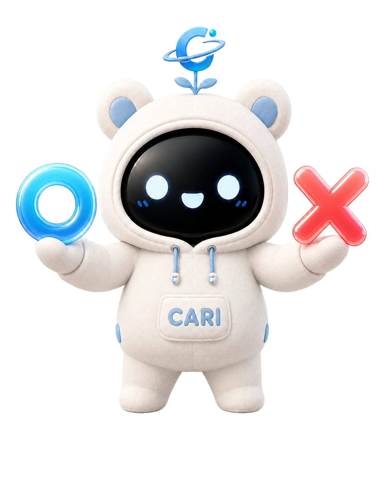
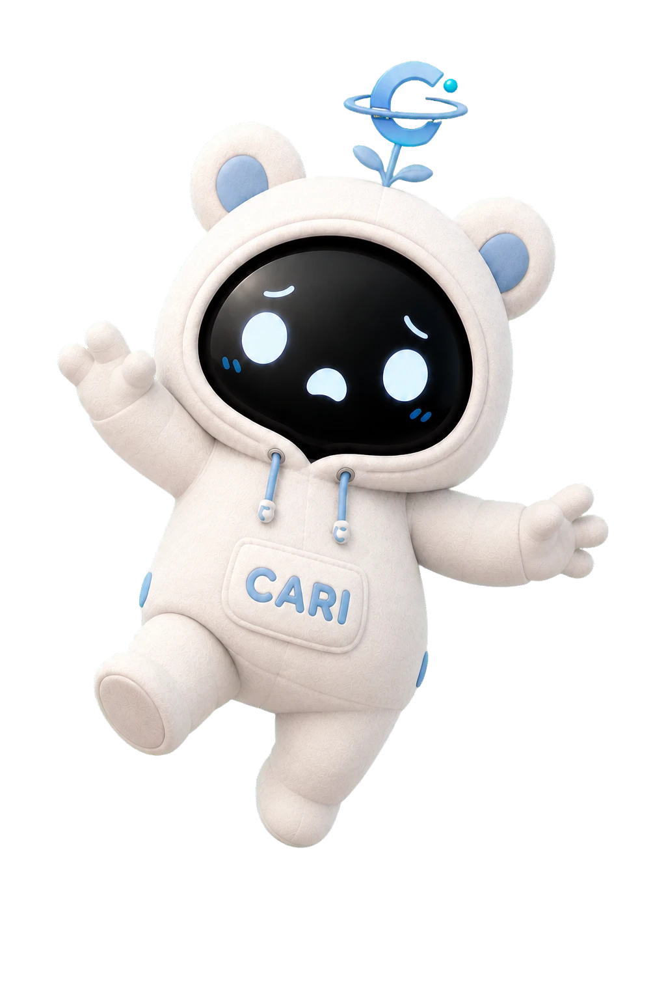

1
스테이지
10
생존 인원
16
준비되면 시작하세요
O
0
명
X
0
명
대기
O
정답
맞는 설명이에요
맞다
1
아니다
2

골라라
CARI
발판이 무너지기 전에 O·X 를 골라라!
뜻이
맞으면 O
, 틀리면
X 발판
으로
10초 뒤
틀린 발판이 무너져요
15 스테이지 버티면
승리
골라보기
GAME OVER

여기서 발판이 무너졌어요!
생존 스테이지
0
신기록!
최종 순위
-
남은 인원
0
최고 기록
0
다시 도전